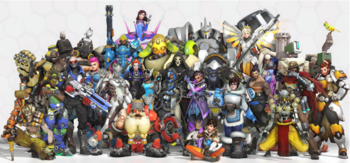

Favorite Heros
OverWatch is a online first person shooter game that was released in 2016. Since 2016 30 million copies have been sold world wide.When the game was in the bata stages there were 21 heros to pick from. Now the game has 30 heros. All of the heros are divided into four groups: